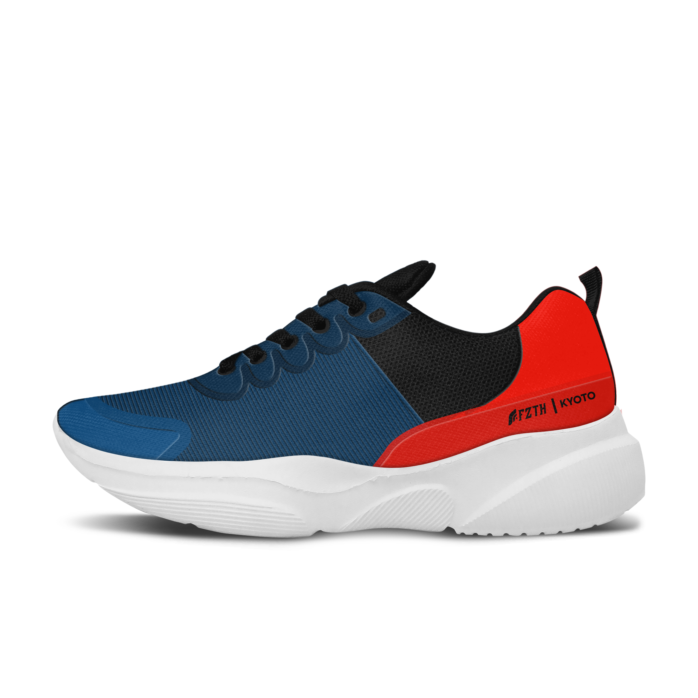
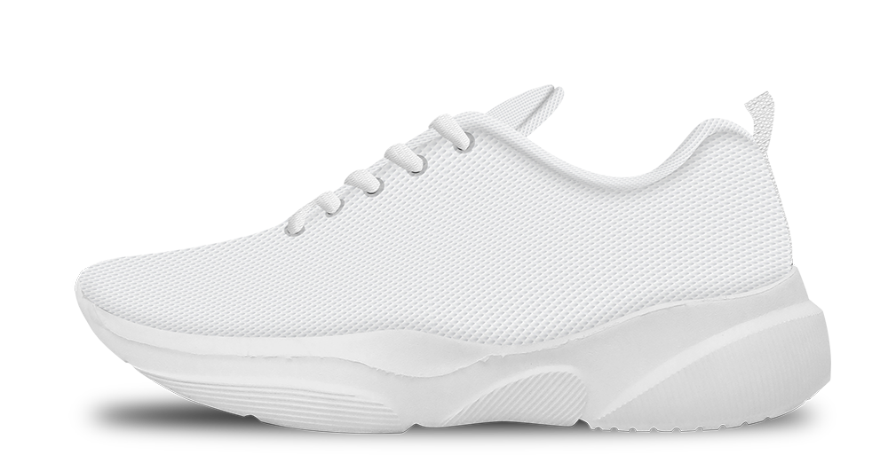
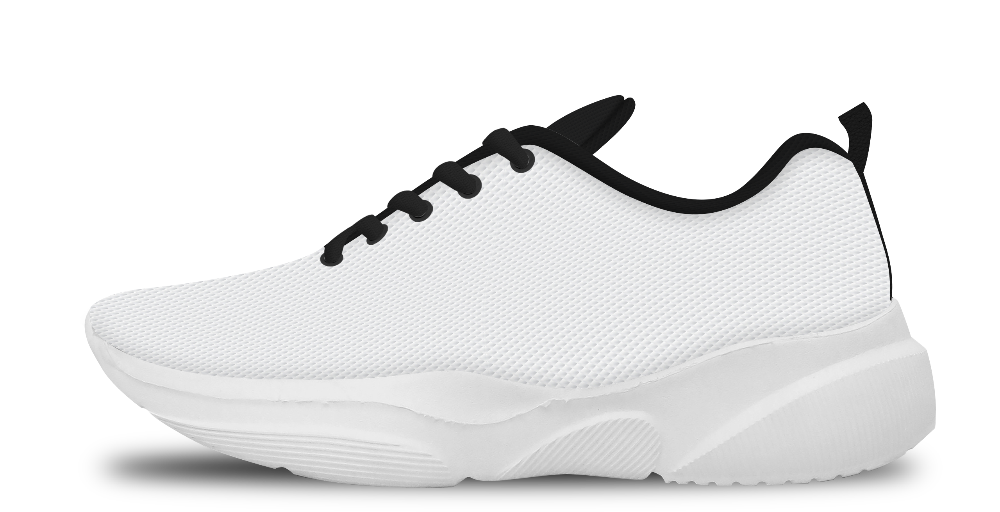
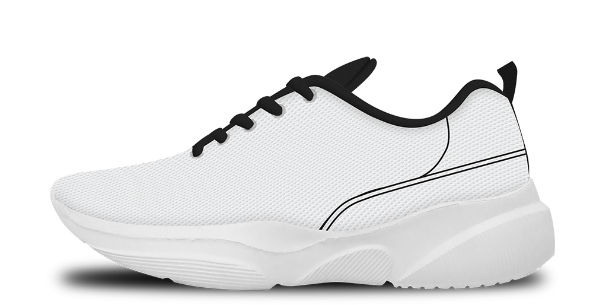
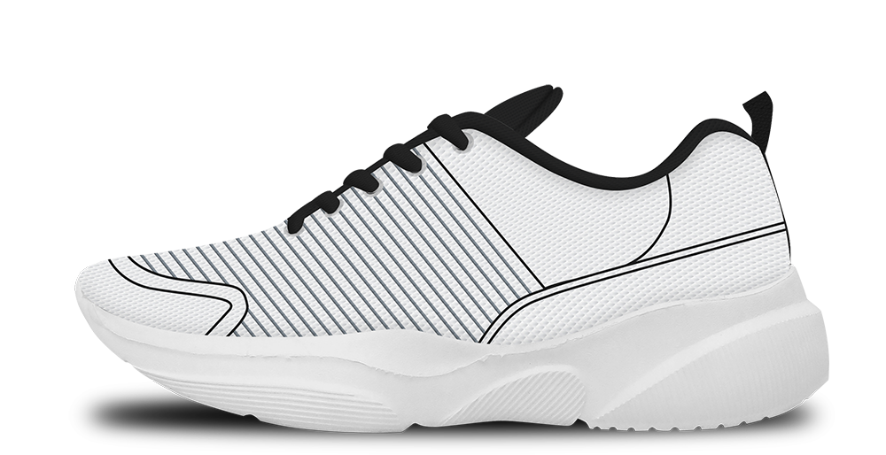
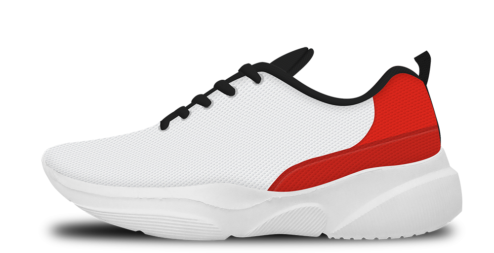

Sepatu FZTH KYOTO - Online Shop
Desain Sepatu ini desain mockup untuk kebutuhan foto produk online shop, file mentah tidak saya tampilkan karena milik Perusahaan sepenuhnya.

Dari mockup polos yang sudah saya buat sebelumnya hasil dari foto produk asli, lalu di edit dan dijadikan mockup

Standar warna setiap bagian berwarna putih, mengikuti bahan
Lining, lidah, tali dan bagian belakang biasanya berwarna hitam

Pembuatan pola pada bagian base.


Setelah selesai melakukan pembuatan pola dan fix, mulai pada pewarnaan, sebenarnya untuk pewarnaan bebas, cuma disini saya biasa konsultasi dengan owner/Boss untuk penentuan warna.

-Final Result-

Saya tidak bisa menambahkan logo dan detail lainnya karena hanya sampai tahap ini saja proses desain yang diberikan, ini termasuk ketentuan perusahaan untuk pemakaian hasil karya yang mana bisa di tampilkan pada portfolio saya ini.